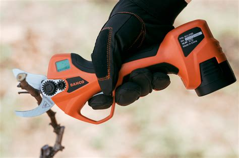
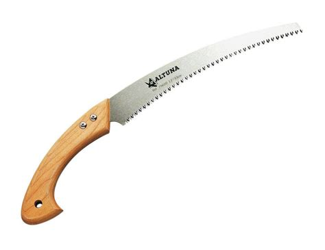
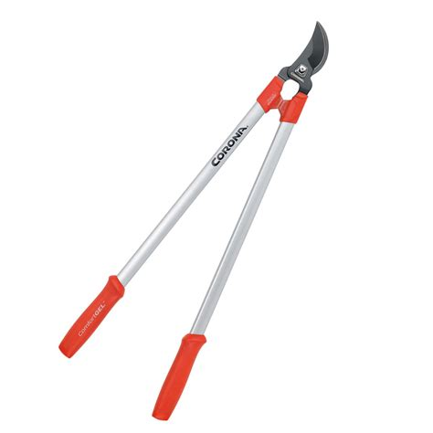

Ahora que ya sabes como y cuando podar, conocerás cuáles son las herramientas que puedes utilizar para hacer esta operación. Algunas, como la sierra de arco o el hacha han caído ya en desuso; otros, como la motosierra o las tijeras eléctricas, son cada vez más utilizadas. Te mostramos a continuación las herramientas más empleadas actualmente:
Tijeras de poda de una mano
Permiten cortar rápidamente pequeñas ramas. Se emplean principalmente para quitar ramillas secas o mal dirigidas.
Tijeras eléctricas
Son tijeras de una mano accionadas por una batería eléctrica. Esto permite que tengan mucha más fuerza y sean muy cómodas de utilizar.

Serrucho
Para cortar ramas de mayor diámetro, se emplea el serrucho.

Tijeras de poda de 2 manos
Son muy útiles para cortar rebrotes o aclarar arbustos. Cómo tienen los brazos más largos, permiten cortar ramas bastante gruesas.

Motosierra
Es una herramienta muy útil para cortar grandes ramas o abatir árboles. Resulta muy peligrosa si no se conoce su uso y se observan las normas de seguridad. Además, como facilita tanto la poda, a menudo hace que podemos más ramas de las necesarias, lo que debilita la planta y aumenta el número de rebrotes posteriormente.
Hay que tener en cuenta que una buena herramienta de poda muy cuidada puede durarnos toda la vida. Por lo tanto, es importante comprar herramientas de calidad y hacerles el mantenimiento adecuado para que siempre estén afiladas y en perfectas condiciones. De este modo también evitaremos desagradables accidentes laborales como cortes o heridas.
En determinados casos pueden usarse también algunos elementos auxiliares, como escaleras, banquillos o carretillas elevadoras para podar ramas altas.
Por otro lado, para podar tendremos que emplear los EPI adecuados. En nuestro caso, utilizaremos siempre guantes y gafas de seguridad. Si cortamos ramas altas con una pértiga también deberíamos llevar casco.